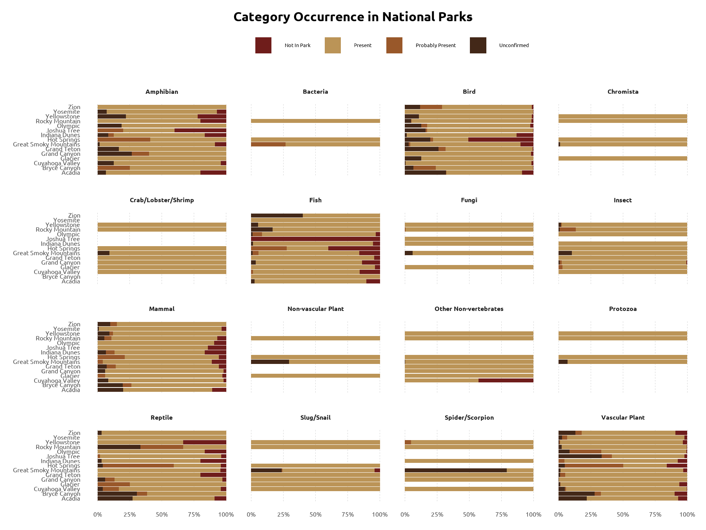
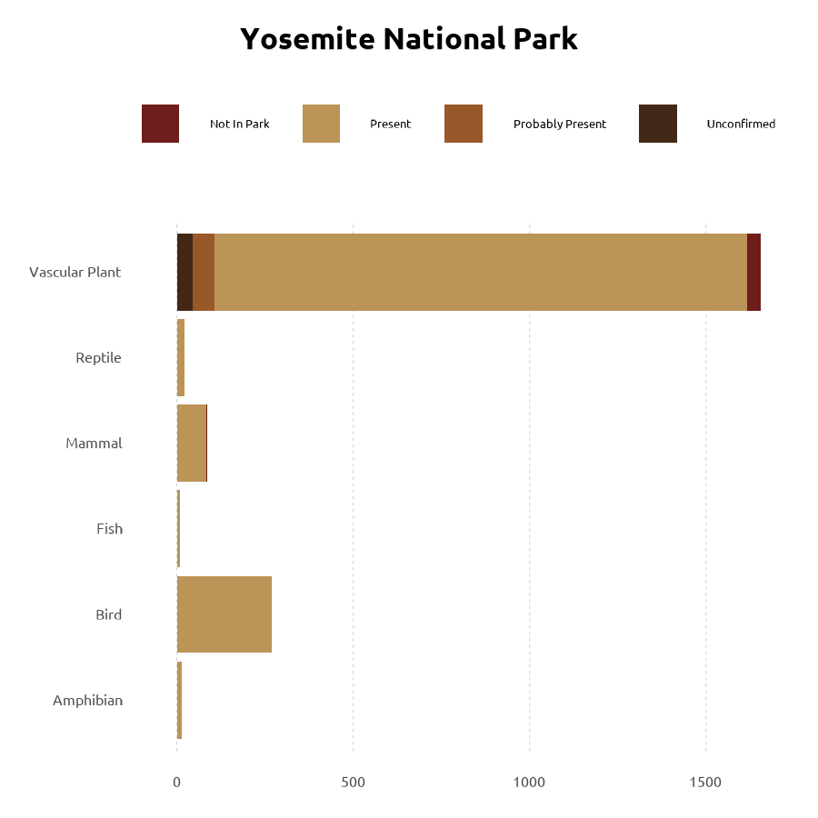

scrolly test
National Parks in the USA
by Michał Wypych
The National Park System in the USA is in charge of caring for the 63 national parks located in the USA. National Parks differ in the kinds of environment, landscape, animals and plants they have preserved. This presentation focuses on 12 parks with data available from Tidytuesday
There are many species, many parks and unfortunately lots of missing information. We have the most information on amphibias, birds, fish, mammals, reptiles and vascular plants. There is little information on presence of bacteria, chromista nad protozoa in those parks

Acadia National Park
The park lies in the North East of the USA, in Maine. It is situated along the Atlantic coastline. It contains mountains, lakes, forests and coastlines which contribute to the diversity of its fauna and flora. There is a lot of confirmed Fish and Amphibians in this park. The lands that are now part of the park have been inhabited over 12 000 years ago.
Bryce Canyon National Park
This park lies in southern Utah. Since it’s a mountain park (it spans over 650 meters!) there is only 1 species of fish present but has a large diversity ofd plants and birds. It is famous for its spire rocks.
Cuyahoga Valley National Park
This park lies close to Cleveland and Lake Erie. It is based around river Cuyahoga which provides it with a large diversity of categories of animals and plants.
Glacier National Park
The park is located in the very north of Montana close to the border with Canada. It is a host for multiple species of plants and mammals that thrive in the alpine climate
Grand Canyon National Park
This park is probably one of the best known national parks in the USA. Located west of Las Vegas in Nevada it is famous for the breathtaking views of canyons up to 6000 feet deep but also for a large variety of plants and birds.
Grand Teton National Park
This park is in northwestern Wyoming. This mountain-based park has a cold and snowy climate is the host for such species like Grizzly Bears and bull moose. It has beautiful glaciers, creeks, lakes and hot springs.
Great Smoky Mountains National Park
This park is located in North Carolina has the largest number of insects, spiders and fungi out of all national parks described here. It has also a huge variety of other categories of living organisms making it the most biodiverse park in thew National Park System. Its mountain temperate climate and humid weather with abundance of rain make it possible for such diversity of organisms to live there
Hot Springs National Park
As the name suggests the Hot Springs National Park is famous for its thermal springs and historic bathhouses. It does not have as many confirmed plant occurrences as the other parks. Located next to Hot springs in Arkansas the park is surrounded by mountians and forests. Unfortunately many species were lost due to hunting and loss of habitat before the park was expanded to protect the fauna and flora of the region.
Indiana Dunes National Park
This park is located by Lake Michigan in northern USA. It is best known for its shoreline and dunes that are host for many plants and bird species. It has fourth highest biodiversity among the national parks.
Joshua Tree National Park
This park is located close to Palm springs in California between Colorado Desert, Mojave Desert and Little San Bernardino Mountains. Many species of birds can be sighted there because it lies on the Pacific flyway for migratory birds.
Olympic National Park
In the far north west of USA lies the Olympic National Park. Located east of Seattle it comprises of mountains with glaciers, temperate rain forests and a long wild coastline. It is home to many plant and mammal species as well as insects and fish. Dolphins, sea lions and even whales can be spotted from its shores.
Rocky Mountain National Park
This park lies close to Denver in Colorado. It’s elevation (from 7,860 feet to 14,259 feet) defines the unique features of this park, from large meadows to alpine lakes. It has a large variety of categories of living organisms with many plants, fungi and insects present.

Yellowstone National Park
This park is famous for its geysers and other hydrothermal areas. It is located in north western Wyoming. Its unique climate is home to a huge variety of insects and plants, especially thermophiles. Thanks to having been established early in the US history it was able to protect its varied wildlife.
Yosemite National Park
This park is located in California, over 200 kilometers east of San Francisco. It is most famous for its waterfalls, valleys and meadows. It is home to giant sequoias and over 1000 species of other plants.

Zion National Park
This park is located in southwestern Utah. Its large elevation change with over 5000 feet in the highest point it provides diverse habitats for many species of plants and animals. The meandering canyons and rivers are home to many plants and birds.
Add a map with all parks for center overlay?
All information on the parks taken from the National Park Service and the data was taken from Tidytuesday week 41 2024